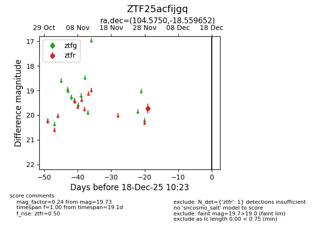
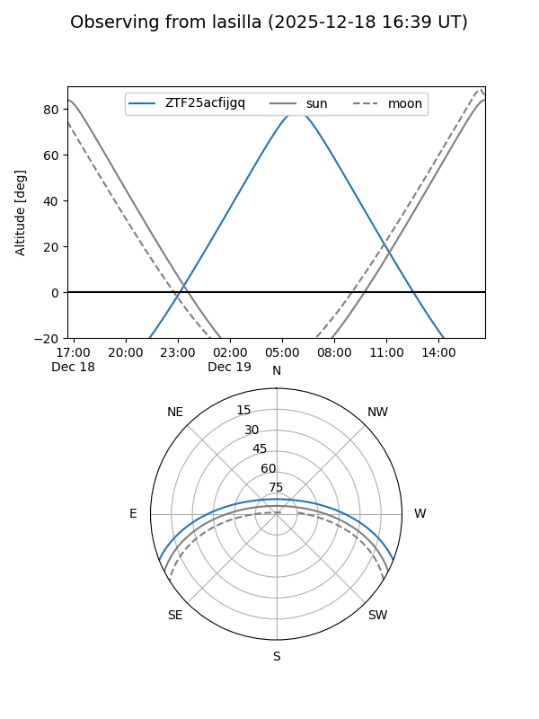
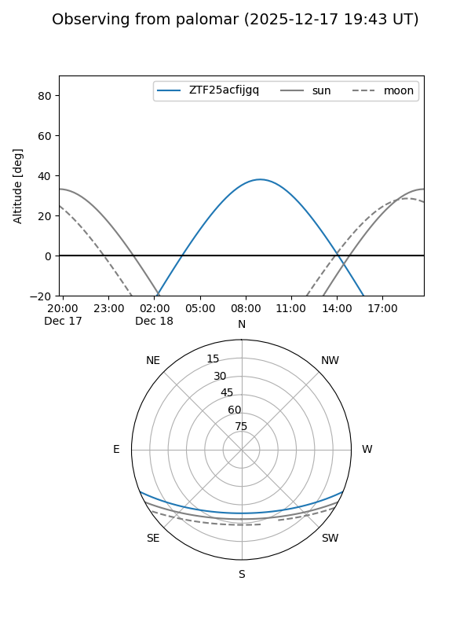

ZTF25acfijgq
Target ZTF25acfijgq at 2025-12-18 11:17
Aliases and brokers:
FINK: fink-portal.org/ZTF25acfijgq
Lasair: lasair-ztf.lsst.ac.uk/objects/ZTF25acfijgq
ALeRCE: alerce.online/object/ZTF25acfijgq
alt names
ZTF25acfijgq (ztf,fink_ztf)
Coordinates:
equatorial (ra, dec) = 104.5750,-18.55965
equatorial (HMS+DMS) = 06:58:18.00,-18:33:34.75
galactic (l, b) = (230.2916,-6.88505)
Photometry
last ztfr=19.73
1 ztfr detections
Lightcurve

Visibility


Additional plots